De Extremadura a lo más alto del podio nacional.
El 15 de mayo de 2026, el sistema biomimético de EXTREMANUS se puso a prueba en la II Competición Universitaria de Manos Protésicas (UPV, Valencia). Nuestro prototipo dominó la clasificación gracias a la velocidad de su arquitectura híbrida y la estabilidad de la potencia.
Pruebas Superadas
Afrontamos 14 retos contrarreloj de agarre y precisión (actividades de la vida diaria), completándolos de forma 100% autónoma.
Participantes
Destacamos en un entorno de máxima exigencia técnica, imponiéndonos ante 10 equipos de 8 universidades de toda España.
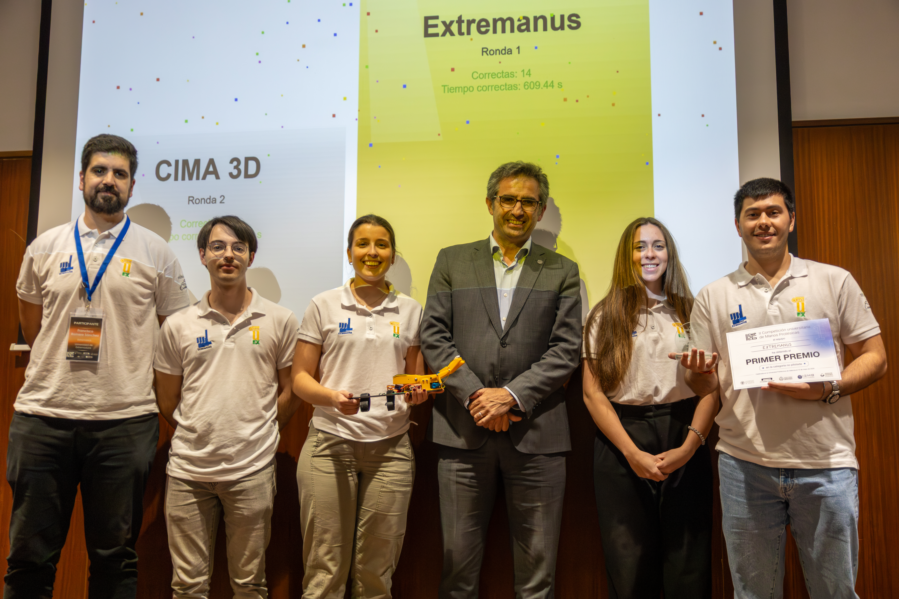
Entrega del Primer Premio
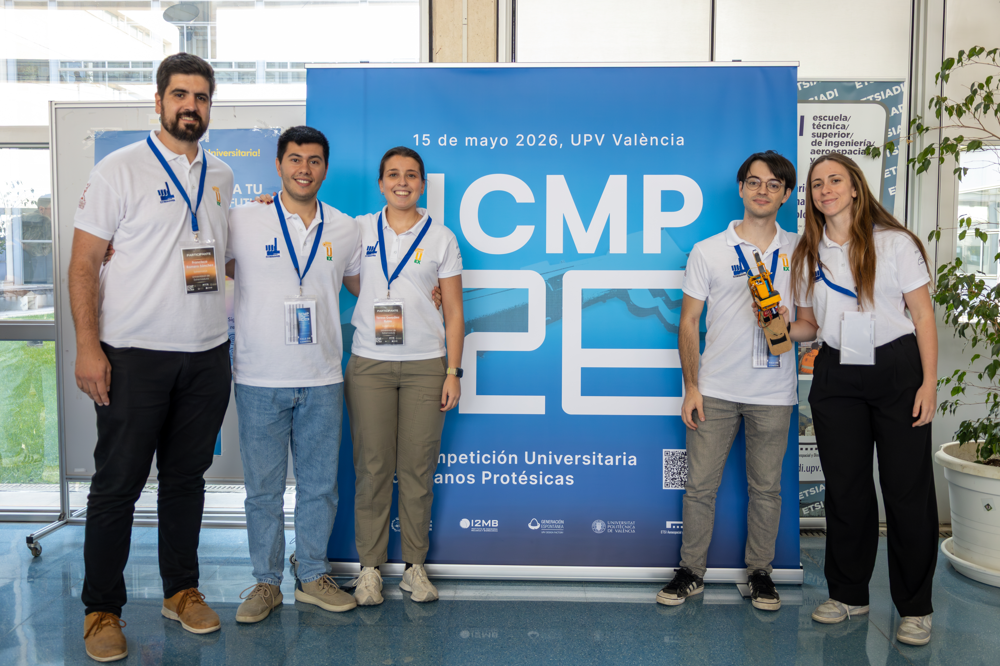
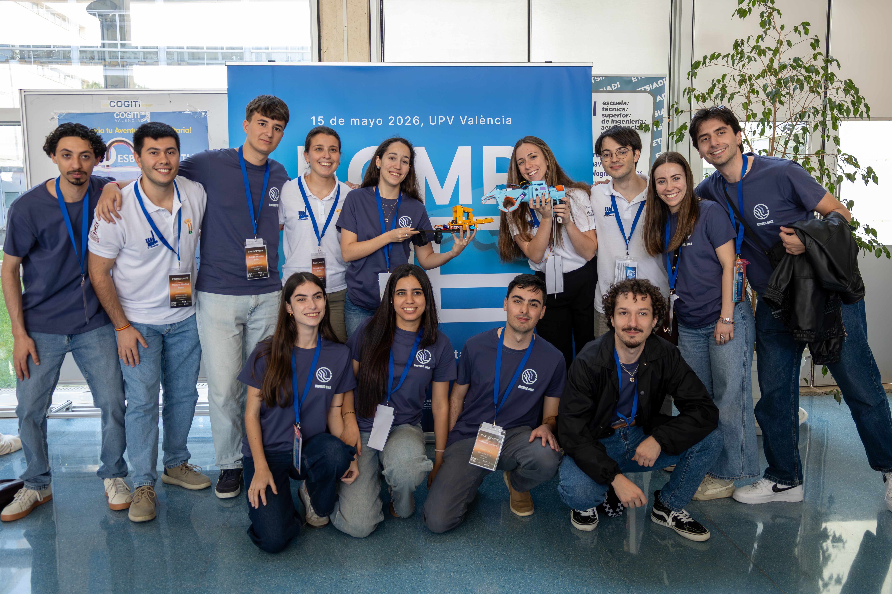
600 Km de Estrategia
El camino hacia el primer premio comenzó mucho antes de pisar el pabellón. Fue un viaje por carretera cruzando la península desde Badajoz hasta Valencia.
Horas de viaje, buena música y charlas interminables donde debatimos cada aspecto técnico y diseñamos la estrategia exacta para resolver las tareas del concurso. Esa conexión humana fue nuestro verdadero motor.
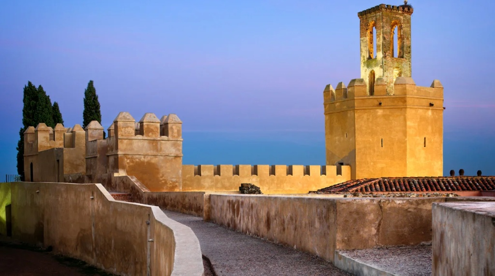
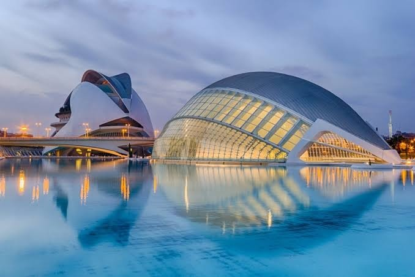
El Factor Humano
Porque detrás de cada línea de código y cada pieza impresa, hay madrugadas, nervios, risas y un grupo de amigos disfrutando del proceso en las calles de Valencia.
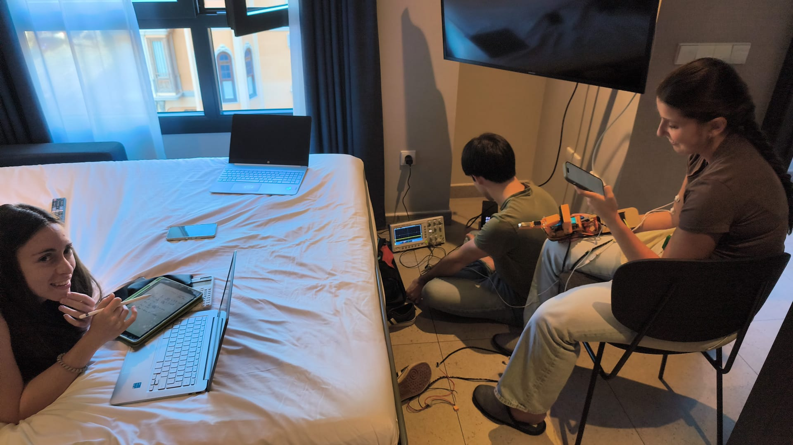
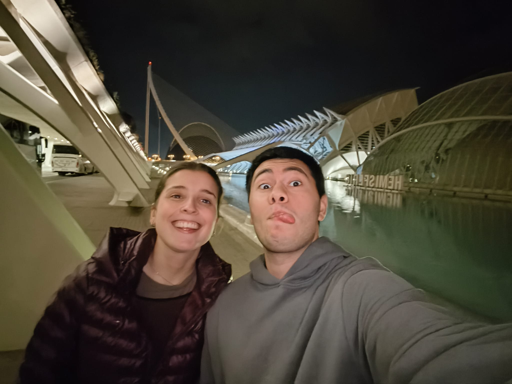
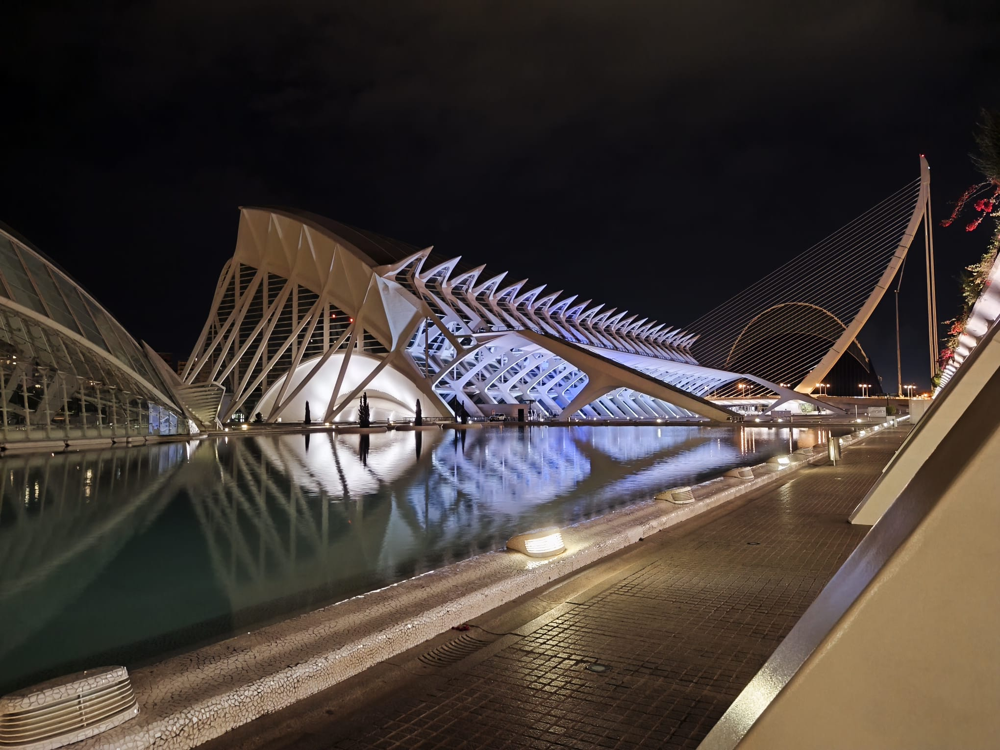
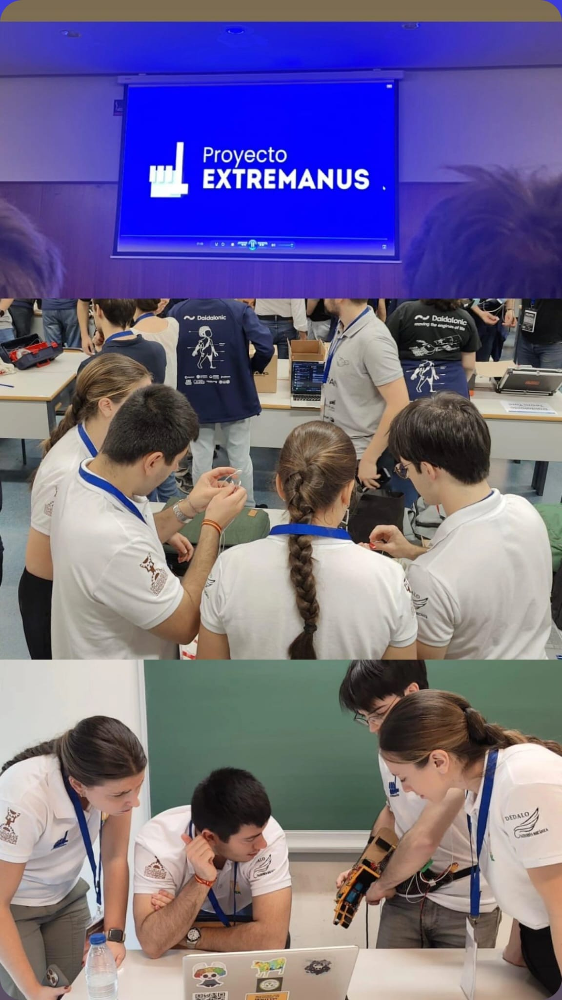
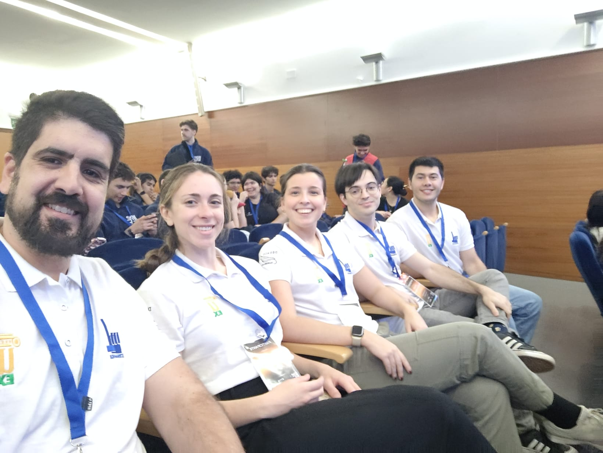
Con el respaldo institucional de:
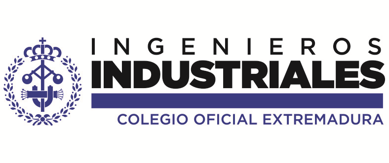
Colegio Oficial de Ingenieros Industriales de Extremadura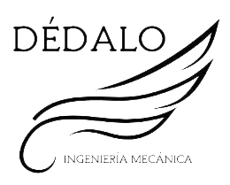
Grupo de Investigación DÉDALO Universidad de ExtremaduraEXTREMANUS en los Medios
19 de mayo, 2026
Gabinete de Comunicación UEx
El equipo Extremanus de la UEx gana el primer premio en la II Competición Universitaria...
19 de mayo, 2026
Región Digital
Equipo Extremanus de la UEx se alza con el 1er premio en diseño de prótesis biónicas...
19 de mayo, 2026
El Periódico de Extremadura
Un equipo de la Universidad de Extremadura se alza con el máximo galardón nacional...
17 de junio, 2026
RTVE
El equipo Extremanus se alza con el primer premio en la II Competición Universitaria de Manos Protésicas...
Tecnología
elDiario.es Extremadura
Jóvenes de la UEx desarrollan la mano protésica ganadora del certamen universitario nacional...
Institucional
Demócrata
Naharro recibe en la Asamblea al equipo Extremanus, vencedor de la competición de manos protésicas...
Recepción Oficial (Vídeo)
Asamblea de Extremadura
El presidente de la Asamblea de Extremadura, Manuel Naharro, recibe al equipo tras su victoria en Valencia.
Ingeniería con Sello Extremeño
Conoce a los cuatro ingenieros industriales detrás del sistema robótico que conquistó la máxima categoría no tripulada en Valencia.
Teresa
Ingeniería MecánicaLidera el diseño del chasis anatómico en PETG, garantizando la resistencia de la estructura bajo estrés y el acople del soporte al piloto.
Violeta
Biomecánica y ActuadoresEspecialista en la cinemática del mecanismo de cuatro barras y la integración mecánica de los actuadores Feetech de alto rendimiento.
De la precisión autónoma al factor humano.
Tras dominar la categoría no tripulada en Valencia, EXTREMANUS da el salto más ambicioso: adaptar nuestra tecnología para la competición con piloto oficial en Barcelona. Nuestro objetivo es claro: volver a ganar y demostrar que la ingeniería extremeña domina la categoría pilotada.
Búsqueda de Piloto Oficial
El hardware está listo. Ahora necesitamos el factor humano. Buscamos a una persona extremeña con amputación transradial (que conserve el codo), con ganas de superación, para que se convierta en el rostro y el piloto de nuestro brazo robótico de competición.
Únete al Proyecto EXTREMANUS
Buscamos alianzas con la administración pública y el sector privado. Tu respaldo financiará la I+D necesaria para adaptar ergonómicamente el prototipo, optimizar los algoritmos de filtrado EMG y cubrir la logística hacia la victoria en Barcelona.